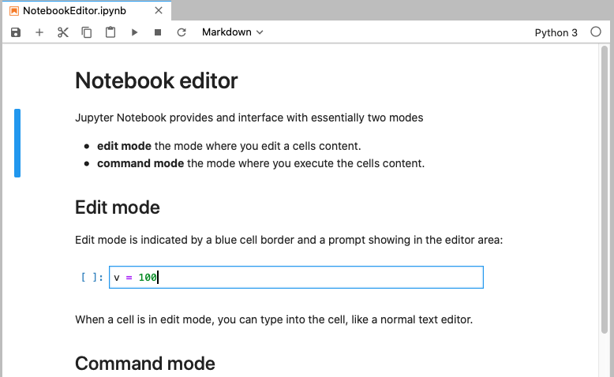
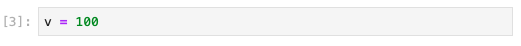

v = 23752636
print(v)23752636

A Jupyter Notebook is a web browser based interactive computing environment that enables users to create documents that include code to be executed, results from the executed code such as plots and images,and finally also an additional documentation in form of markdown text including equations in LaTeX.
These documents provide a complete and self-contained record of a computation that can be converted to various formats and shared with others using email, version control systems (like git/GitHub) or nbviewer.jupyter.org.
The Jupyter Notebook ecosystem consists of three main components:
Let’s explore each of these components in detail:
The Notebook editor is an interactive web-based application for creating and editing notebook documents. It allows users to write and run code interactively, as well as add rich text and multimedia content. When running Jupyter on a server, you’ll typically use either the classic Jupyter Notebook interface or JupyterLab, which is a more advanced and feature-rich version of the notebook editor.
Key features of the Notebook editor include:
The Notebook editor in Jupyter offers several advanced features:
Cell Metadata: Each cell has associated metadata that can be used to control its behavior. This includes tags for slideshows, hiding code cells, and controlling cell execution.
Magic Commands: Special commands prefixed with % (line magics) or %% (cell magics) that provide additional functionality, such as timing code execution or displaying plots inline.
Auto-completion: The editor provides context-aware auto-completion for Python code, helping users write code more efficiently.
Code Folding: Users can collapse long code blocks for better readability.
Multiple Cursors: Advanced editing with multiple cursors for simultaneous editing at different locations.
Split View: The ability to split the notebook view, allowing users to work on different parts of the notebook simultaneously.
Variable Inspector: A tool to inspect and manage variables in the kernel’s memory.
Integrated Debugger: Some Jupyter environments offer an integrated debugger for step-by-step code execution and inspection.
Kernels are the computational engines that execute the code contained in a notebook. They are separate processes that run independently of the notebook editor.
Key responsibilities of kernels include: * Executing user code * Returning computation results to the notebook editor * Handling computations for interactive widgets * Providing features like tab completion and introspection
Jupyter notebooks are language-agnostic. Different kernels can be installed to support various programming languages such as Python, R, Julia, and many others. The default kernel runs Python code, but users can select different kernels for each notebook via the Kernel menu.
Kernels communicate with the notebook editor using a JSON-based protocol over ZeroMQ/WebSockets. For more technical details, see the messaging specification.
Each kernel runs in its own environment, which can be customized to include specific libraries and dependencies. This allows users to create isolated environments for different projects, ensuring that dependencies do not conflict.
Kernels also support interactive features such as:
Advanced users can create custom kernels to support additional languages or specialized computing environments. This involves writing a kernel specification and implementing the necessary communication protocols.
For managing kernels, Jupyter provides several commands and options:
Users can also monitor kernel activity and resource usage through the Jupyter interface, ensuring efficient and effective use of computational resources.
Notebook documents are self-contained files that encapsulate all content created in the notebook editor. They include code inputs/outputs, Markdown text, equations, images, and other media. Each document is associated with a specific kernel and serves as both a human-readable record of analysis and an executable script to reproduce the work.
Characteristics of notebook documents:
.ipynb extension.Version Control: Notebook documents can be version controlled using systems like Git. This allows users to track changes, collaborate with others, and revert to previous versions if needed. Tools like nbdime provide diff and merge capabilities specifically designed for Jupyter Notebooks.
Cell Tags: Cells in a notebook can be tagged with metadata to control their behavior during execution, export, or presentation. For example, tags can be used to hide input or output, skip execution, or designate cells as slides in a presentation.
Interactive Widgets: Notebook documents can include interactive widgets that allow users to manipulate parameters and visualize changes in real-time. This is particularly useful for data exploration and interactive simulations.
Extensions: The Jupyter ecosystem supports a wide range of extensions that enhance the functionality of notebook documents. These extensions can add features like spell checking, code formatting, and integration with external tools and services.
Security: Notebook documents can include code that executes on the user’s machine, which poses security risks. Jupyter provides mechanisms to sanitize notebooks and prevent the execution of untrusted code. Users should be cautious when opening notebooks from unknown sources.
Collaboration: Jupyter Notebooks can be shared and collaboratively edited in real-time using platforms like Google Colab, Microsoft Azure Notebooks, and JupyterHub. These platforms provide cloud-based environments where multiple users can work on the same notebook simultaneously.
Customization: Users can customize the appearance and behavior of notebook documents using CSS and JavaScript. This allows for the creation of tailored interfaces and enhanced user experiences.
Export Options: In addition to static formats, notebooks can be exported to interactive formats like dashboards and web applications. Tools like Voila convert notebooks into standalone web applications that can be shared and deployed.
Provenance: Notebooks can include provenance information that tracks the origin and history of data and computations. This is important for reproducibility and transparency in scientific research.
Documentation: Notebook documents can serve as comprehensive documentation for projects, combining code, results, and narrative text. This makes them valuable for teaching, tutorials, and sharing research findings.
Performance: Large notebooks with many cells and outputs can become slow and unwieldy. Techniques like cell output clearing, using lightweight data formats, and splitting notebooks into smaller parts can help maintain performance.
Integration: Jupyter Notebooks can integrate with a wide range of data sources, libraries, and tools. This includes databases, cloud storage, machine learning frameworks, and visualization libraries, making them a versatile tool for data science and research.
Internal Format: Notebook files are JSON text files with binary data encoded in base64, making them easy to manipulate programmatically.
Exportability: Notebooks can be exported to various static formats (HTML, reStructuredText, LaTeX, PDF, slide shows) using Jupyter’s nbconvert utility.
Sharing: Notebooks can be shared via nbviewer, which renders notebooks from public URLs or GitHub as static web pages, allowing others to view the content without installing Jupyter.
This integrated system of editor, kernels, and documents makes Jupyter Notebooks a powerful tool for interactive computing, data analysis, and sharing of computational narratives.

The Jupyter Notebook editor provides an interactive environment for writing code, creating visualizations, and documenting computational workflows. It consists of a web-based interface that allows users to create and edit notebook documents containing code, text, equations, images, and interactive elements. A Jupyter Notebook provides an interface with essentially two modes of operation:
In the more advanced version of JupyterLab you can also have a presentation mode where you can present your notebook as a slideshow.
Edit mode is indicated by a blue cell border and a prompt showing in the editor area when a cell is selected. You can enter edit mode by pressing Enter or using the mouse to click on a cell’s editor area.
When a cell is in edit mode, you can type into the cell, like a normal text editor
Command mode is indicated by a grey cell border with a blue left margin. When you are in command mode, you are able to edit the notebook as a whole, but not type into individual cells. Most importantly, in command mode, the keyboard is mapped to a set of shortcuts that let you perform notebook and cell actions efficiently.

If you have a hardware keyboard connected to your iOS device, you can use Jupyter keyboard shortcuts. The modal user interface of the Jupyter Notebook has been optimized for efficient keyboard usage. This is made possible by having two different sets of keyboard shortcuts: one set that is active in edit mode and another in command mode.
Code cells allow you to enter and run code. Run a code cell by pressing the ▶︎ button in the bottom-right panel, or Control+Enter on your hardware keyboard.
v = 23752636
print(v)23752636There are a couple of keyboard shortcuts for running code:
Control+Enter run the current cell and enters command mode.Shift+Enter runs the current cell and moves selection to the one below.Option+Enter runs the current cell and inserts a new one below.Code is run in a separate process called the kernel, which can be interrupted or restarted. You can see kernel indicator in the top-right corner reporting current kernel state: ⚪︎ means kernel is ready to execute code, and ⚫︎ means kernel is currently busy. Tapping kernel indicator will open kernel menu, where you can reconnect, interrupt or restart kernel.
Try running the following cell — kernel indicator will switch from ⚪︎ to ⚫︎, i.e. reporting kernel as “busy”. This means that you won’t be able to run any new cells until current execution finishes, or until kernel is interrupted. You can then go to kernel menu by tapping the kernel indicator and select “Interrupt”.
Entering code is pretty easy. You just have to click into a cell and type the commands you want to type. If you have multiple lines of code, just press enter at the end of the line and start a new one.
code blocks Python identifies blocks of codes belonging together by its identation. This will become important if you write longer code in a cell later. To indent the block, you may use either whitespaces or tabs.
comments Comments can be added to annotate the code, such that you or someone else can understand the code.
# character at in front of the comment.'''and end with the same '''. They are used as docstrings to provide a help text.# typical function
def function(x):
''' function to calculate a function
arguments:
x ... float or integer value
returns:
y ... two times the integer value
'''
y=2*x # don't forget the identation of the block
return(y)
help(function)Help on function function in module __main__:
function(x)
function to calculate a function
arguments:
x ... float or integer value
returns:
y ... two times the integer value
Text can be added to Jupyter Notebooks using Markdown cells. This is extremely useful providing a complete documentation of your calculations or simulations. In this way, everything really becomes an notebook. You can change the cell type to Markdown by using the “Cell Actions” menu, or with a hardware keyboard shortcut m. Markdown is a popular markup language that is a superset of HTML. Its specification can be found here:
https://daringfireball.net/projects/markdown/
Markdown cells can either be rendered or unrendered.
When they are rendered, you will see a nice formatted representation of the cell’s contents.
When they are unrendered, you will see the raw text source of the cell. To render the selected cell, click the ▶︎ button or shift+ enter. To unrender, select the markdown cell, and press enter or just double click.
Below are some basic markdown examples, in its rendered form. If you which to access how to create specific appearances, double click the individual cells to put the into an unrendered edit mode.
You can make text italic or bold. You can build nested itemized or enumerated lists:
Now another list:
Here is a blockquote:
Beautiful is better than ugly. Explicit is better than implicit. Simple is better than complex. Complex is better than complicated. Flat is better than nested. Sparse is better than dense. Readability counts. Special cases aren’t special enough to break the rules. Namespaces are one honking great idea – let’s do more of those!
And Web links:
You can add headings by starting a line with one (or multiple) # followed by a space and the title of your section. The number of # you use will determine the size of the heading
# Heading 1
# Heading 2
## Heading 2.1
## Heading 2.2
### Heading 2.2.1You can embed code meant for illustration instead of execution in Python:
def f(x):
"""a docstring"""
return x**2Courtesy of MathJax, you can include mathematical expressions both inline: \(e^{i\pi} + 1 = 0\) and displayed:
\[e^x=\sum_{i=0}^\infty \frac{1}{i!}x^i\]
Inline expressions can be added by surrounding the latex code with $:
$e^{i\pi} + 1 = 0$Expressions on their own line are surrounded by $$:
$$e^x=\sum_{i=0}^\infty \frac{1}{i!}x^i$$Images may be also directly integrated into a Markdown block.
To include images use
for example
To include videos, we use HTML code like
<video src="mov/movie.mp4" width="320" height="200" controls preload></video>in the Markdown cell. This works with videos stored locally.
You can embed YouTube Videos as well by using the IPython module.
from IPython.display import YouTubeVideo
YouTubeVideo('QlLx32juGzI',width=600)Variable names in Python can include alphanumerical characters a-z, A-Z, 0-9, and the special character _. Normal variable names must start with a letter or an underscore. By convention, variable names typically start with a lower-case letter, while Class names start with a capital letter and internal variables start with an underscore.
There are a number of Python keywords that cannot be used as variable names because Python uses them for other things. These keywords are:
and, as, assert, break, class, continue, def, del, elif, else, except, exec, finally, for, from, global, if, import, in, is, lambda, not, or, pass, print, raise, return, try, while, with, yield
Be aware of the keyword lambda, which could easily be a natural variable name in a scientific program. However, as a reserved keyword, it cannot be used as a variable name.
The assignment operator in Python is =. Python is a dynamically typed language, so we do not need to specify the type of a variable when we create one.
Assigning a value to a new variable creates the variable:
# variable assignments
x = 1.0
my_favorite_variable = 12.2
x1.0Although not explicitly specified, a variable does have a type associated with it (e.g., integer, float, string). The type is derived from the value that was assigned to it. To determine the type of a variable, we can use the type function.
type(x)floatIf we assign a new value to a variable, its type can change.
x = 1type(x)intIf we try to use a variable that has not yet been defined, we get a NameError error.
#print(g)Python supports various number types, including integers, floating-point numbers, and complex numbers. These are some of the basic building blocks of doing arithmetic in any programming language. We will discuss each of these types in more detail.
| Type | Example | Description | Limits | Use Cases |
|---|---|---|---|---|
| int | 42 | Whole numbers | Unlimited precision (bounded by available memory) | Counting, indexing |
| float | 3.14159 | Decimal numbers | Typically ±1.8e308 with 15-17 digits of precision (64-bit) | Scientific calculations, prices |
| complex | 2 + 3j | Numbers with real and imaginary parts | Same as float for both real and imaginary parts | Signal processing, electrical engineering |
| bool | True / False | Logical values | Only two values: True (1) and False (0) | Conditional operations, flags |
Integer Representation: Integers are whole numbers without a decimal point.
x = 1
type(x)intBinary, Octal, and Hexadecimal: Integers can be represented in different bases:
0b1010111110 # Binary
0x0F # Hexadecimal15Floating Point Representation: Numbers with a decimal point are treated as floating-point values.
x = 3.141
type(x)floatMaximum Float Value: Python handles large floats, converting them to infinity if they exceed the maximum representable value.
1.7976931348623157e+308 * 2 # Output: infinfComplex Number Representation: Complex numbers have a real and an imaginary part.
c = 2 + 4j
type(c)complexc.real: Real part of the complex number.c.imag: Imaginary part of the complex number.print(c.real)
print(c.imag)2.0
4.0Complex Conjugate: Use the .conjugate() method to get the complex conjugate.
c = c.conjugate()
print(c)(2-4j)Python automatically converts types during operations involving mixed types. The result is a type that can accommodate all the values involved in the operation. This is known as implicit type conversion. For example, adding an integer and a float results in a float.
integer_number = 123
float_number = 1.23
new_number = integer_number + float_number
type(new_number)floatUse functions like int(), float(), and str() to explicitly convert types from one to another. Explicit type conversion is also known as type casting. For example, converting a string to an integer.
num_string = "12"
num_string = int(num_string)
type(num_string)intConverting a float to an integer truncates the decimal part.
x = 5 / 2
x = int(x)
z = complex(x)Complex numbers cannot be directly converted to floats or integers; extract the real or imaginary part first.
y = bool(z.real)
print(z.real, " -> ", y, type(y))2.0 -> True <class 'bool'>The following code snippets demonstrate the use of variables and basic arithmetic operations in Python. The code snippets include examples of variable assignments, type conversion, and arithmetic operations.
# 1. Converting Units of Distance
# Distance in kilometers
distance_km = 5.0
# Conversion factor from kilometers to meters
conversion_factor = 1000
# Convert distance to meters
distance_meters = distance_km * conversion_factor
# 2. Calculating Time from Distance and Speed
# Given distance in meters
distance = 1000.0 # meters
# Given speed in meters per second
speed = 5.0 # meters per second
# Calculate time in seconds
time = distance / speed
# 3. Energy Calculation Using Kinetic Energy Formula
# Mass in kilograms
mass = 70.0 # kg
# Velocity in meters per second
velocity = 10.0 # m/s
# Calculate kinetic energy
kinetic_energy = 0.5 * mass * velocity ** 2
# 4. Temperature Conversion (Celsius to Fahrenheit)
# Temperature in Celsius
temp_celsius = 25.0 # degrees Celsius
# Convert to Fahrenheit
temp_fahrenheit = (temp_celsius * 9/5) + 32
# 5. Power Calculation Using Work and Time
# Work done in joules
work_done = 500.0 # joules
# Time taken in seconds
time_taken = 20.0 # seconds
# Calculate power
power_output = work_done / time_taken
# 6. Calculating Force Using Newton's Second Law
# Mass in kilograms
mass = 10.0 # kg
# Acceleration in meters per second squared
acceleration = 9.8 # m/s^2
# Calculate force
force = mass * acceleration
# Output Results
print(f"Distance in meters: {distance_meters} m")
print(f"Time to travel {distance} meters at {speed} m/s: {time} seconds")
print(f"Kinetic energy: {kinetic_energy} joules")
print(f"Temperature in Fahrenheit: {temp_fahrenheit} °F")
print(f"Power output: {power_output} watts")
print(f"Force: {force} newtons")Distance in meters: 5000.0 m
Time to travel 1000.0 meters at 5.0 m/s: 200.0 seconds
Kinetic energy: 3500.0 joules
Temperature in Fahrenheit: 77.0 °F
Power output: 25.0 watts
Force: 98.0 newtons